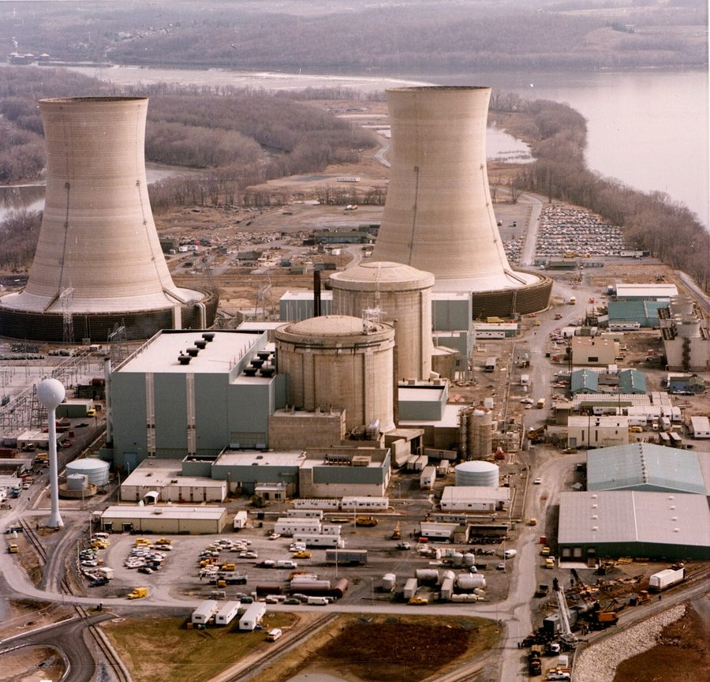

- Explain why nearly everything we do online already runs in a data center, and what AI changes about those buildings.
- Separate training cost from inference cost, and show why the multiplication matters more than the query.
- Define an externality and find one in the AI buildout and one in your own week.
- Describe the disclosure gap: what has been published, by whom, how to read it (scopes and medians), and what still hasn't.
- Decide on the buildout with the two easy exits closed, and name what your decision costs.
The question, and the point of this chapter
Most of this book asks what AI systems do to people. This chapter asks what running them does to everything else. Nearly everything we do online, from streaming a show to backing up a photo, already happens in a data center: a building full of hot computers, drawing real power, cooled with real water, next to a real town. The cloud is a marketing word for other people's buildings. AI didn't invent that footprint, but it is making it bigger and changing its shape, and every prompt we send adds to it. The answer comes back feeling weightless. It isn't. It has a wattage, a water bill, and a street address.
So the week comes down to two questions. What does AI cost the physical world, and who pays? And the one that turns out to matter more: why is the first question so hard to answer?
The point of this chapter, in one sentence: AI's physical cost is small per prompt and enormous in total, part of it is paid by people who never sent a prompt, and the number that would settle every argument about it is a number the companies have and mostly choose not to publish.
The case is the buildout, the largest infrastructure spending spree in the history of software, told through one nuclear plant and one electric bill. In the lab, you'll read what researchers and companies have measured about AI's energy and water, then what they've measured about the things you already do every day, like streaming, YouTube, TikTok, and gaming. Then you'll build a technology impact calculator with Claude and put all of it next to a flight, a burger, and a golf course.
The concepts: the building, the two costs, the neighbor's bill, and the fog
2.1 The data center: where everything already lives
Start with something that isn't AI at all. Every show we stream, every photo that backs up to the cloud, every email, map, and social feed runs in a data center: a building full of computers that other people use over the internet. For most of computing's history, companies ran their own server rooms. Starting in 2006, when Amazon began renting out computing power, followed later by Microsoft and Google, that work moved into a small number of enormous shared buildings run by a few companies. That's what "the cloud" means. Concentrating the work made each task far more efficient, and for years those gains held the total steady. By Lawrence Berkeley National Laboratory's count, US data centers used about 58 terawatt-hours of electricity in 2014, and roughly 60 through 2016.
So here's a fair starting point before we get to AI: all of us already have a data center footprint. An hour of streaming video, counting the data center, the network, and the screen, came to roughly 36 grams of CO2 in the International Energy Agency's 2019 estimate, and most of that is the screen and the network, not the building. Google's own figure for a median text prompt to its Gemini app, counting only Google's side, is about 0.03 grams. The two numbers draw their boundaries differently, so the comparison is rough. It isn't close, though. One evening of streaming outweighs a lot of ordinary questions to a chatbot. That doesn't make AI free. It means the useful question is never whether something uses a data center, because almost everything does. The question is how much, for what, and who's counting.
2.2 What's different about data centers in the AI era
Then the line started climbing. US data center electricity reached 76 terawatt-hours in 2018 and 176 in 2023, about 4.4 percent of the country's electricity, and the Berkeley Lab report says demand more than doubled between 2017 and 2023, largely because of servers built for AI. Four things changed.
The chips. An AI chip, the kind Chapter 1's ImageNet team bought for $500 in 2012, now costs tens of thousands of dollars, and a modern AI data center holds tens of thousands of them, wired together, running near their limit around the clock.
The heat and the water. Chips that run hard get hot, and cooling them takes fans, chilled water, or both. So an AI data center needs three things from wherever it lands: a lot of electricity, delivered without interruption; water, or the power to run cooling that doesn't use water; and land near a grid connection big enough to carry the load.
Every answer is made fresh. A streaming service mostly sends a file that already exists. A generative model computes a new answer every time anyone asks, one word at a time. That's why a request costs more than a stream of the same length would suggest, and why the cost grows with every new user.
The hardware turns over. Every server eventually becomes electronic waste, and the world already makes a lot of it: a record 62 million tonnes in 2022, with less than a quarter documented as properly recycled, according to the UN's Global E-waste Monitor. A 2024 study in Nature Computational Science estimated that generative AI alone could add 1.2 to 5 million tonnes by 2030, as faster chips push older ones out.
Now put a size on it. A single large AI data center is now planned in the hundreds of megawatts, and the largest campuses in the gigawatts. One gigawatt is roughly the output of one nuclear reactor. By the International Energy Agency's count, data centers worldwide used about 415 terawatt-hours of electricity in 2024, around 1.5 percent of all the electricity on Earth, and the IEA expects about 945 by 2030, with AI the main driver. In the United States, the Berkeley Lab report projected somewhere between 6.7 and 12 percent of national electricity by 2028. The width of that range is this chapter's subject.
Keep one more number beside those, because it cuts the other way. Even with that growth, the IEA expects data centers to account for less than a tenth of the world's growth in electricity demand through 2030, behind things like air conditioning and electric vehicles, and it expects the United States and China to account for nearly 80 percent of the data center growth. The pressure is real, and it's concentrated: particular grids and particular towns carry most of it.
Data center. The building where our digital lives already run, and where AI now runs too: chips, power, cooling, and a street address with neighbors. What people get wrong: they picture "the cloud" as nowhere, or they think AI invented the footprint. It's somewhere, it was already large, and AI is changing both its size and its shape: hotter chips, answers computed fresh, and hardware that turns over faster. Every question in this chapter starts by finding the building.
2.3 Two costs: training and inference
To think clearly about AI's footprint, split it into two pieces that behave completely differently.
Training is the cost of teaching the model: weeks or months of thousands of chips running flat out on most of the internet, until the billions of numbers inside the model stop being wrong. For a frontier model it's an energy bill in the gigawatt-hours and a money bill in the hundreds of millions of dollars. It's a big number. But it's paid once per model, and then spread across everything that model ever does.
Inference is the cost of answering: every prompt, from every user, forever. Each one is tiny. In August 2025 Google published the first detailed measurement from a major company: the median text prompt to its Gemini app used 0.24 watt-hours of electricity and about 0.26 milliliters of water, which Google compared to nine seconds of television and five drops. OpenAI's chief executive gave a similar figure for an average ChatGPT query in a blog post that June, about 0.34 watt-hours. Independent researchers at Epoch AI landed near 0.3. So for an ordinary question to an ordinary chatbot, the honest number is a few tenths of a watt-hour: about what a microwave uses in a single second.
Then why does anyone care? Because of the multiplication. Let's do it.
Table 1 · The multiplication. Company-reported and independent figures for a typical text prompt, scaled up. The per-prompt numbers are the companies' own; the scale-up is arithmetic.
| Scale | Energy per day at 0.3 Wh a prompt, 20 prompts a person | Roughly the same as |
|---|---|---|
| You | 6 Wh | Charging your phone halfway |
| This class (45 people) | 270 Wh | One load of laundry, washed cold |
| All of WWU (about 16,000) | 96 kWh | Three US homes for a day |
| 800 million people, every day, for a year | 1.75 TWh | The yearly electricity of roughly 160,000 US homes |
Now two things that make the table an underestimate. First, the 0.3 figure is for a short text answer from a mid-sized model. Ask a frontier "reasoning" model to think for a minute before it answers, and independent estimates run to tens of watt-hours for a single reply; for those models, no company has published a number. Second, most AI use isn't a person typing a question. It's AI built into search results, email, spreadsheets, customer service, and code, firing on every keystroke whether you asked or not. That use is invisible to you and enormous in aggregate. The IEA's growth figures come from counting chips shipped and power drawn, not from adding up chat prompts, and that is why the total keeps rising even as each prompt gets cheaper. Google's own report says the energy of its median prompt fell 33 times in a year. Google's total electricity use went up anyway.
And a short text answer is the cheap end. An AI image costs more, a five-second AI video can cost thousands of times more than a text answer, and turning on reasoning multiplies the cost of text again. In the lab, you put those numbers side by side yourself.
Training vs. inference. Training: the one-time cost of building the model. Inference: the recurring cost of every answer. What people get wrong: they argue about the query. "A prompt uses less than a lightbulb" and "a prompt is boiling the oceans" are both about the query, and neither is the story. The story is small times billions times forever, and the second, invisible kind of use nobody counts as "using AI."
2.4 The externality: the neighbor's bill
Here's the concept from this chapter you'll use most for the rest of the course. An externality is a cost, or a benefit, of an activity that falls on someone who wasn't part of the deal. Your prompt is free to you and profitable to the company. If the data center that answered it raises the electric bill of a family two counties away, that family paid for your prompt and never got a say. Economists have had the word for a century. Pollution is the classic example. Data centers are the current one.
Let's look at what happened. The biggest US grid is called PJM. It covers all or part of thirteen states, from Illinois to New Jersey, and it hosts more data centers than anywhere else on Earth. Once a year PJM runs an auction where power plants get paid to promise capacity for a future year, and that cost goes onto everyone's bill. In the auction for 2025 to 2026, the price jumped roughly nine times. PJM's independent market monitor, whose job is to watch the market for exactly this, estimated that data centers were responsible for 63 percent of the increase, about $9.3 billion passed to customers. In July 2026, the auction for 2028 to 2029 cleared $16.4 billion, and the same monitor attributed about $6.3 billion of it to data centers. PJM would say only that the monitor's numbers are the monitor's own.
Now the other edge, because this chapter wouldn't be honest without it. A June 2026 working paper from the Electric Power Research Institute, an industry-funded lab, looked at 2015 through 2024 and found the opposite of what everyone assumed: over that decade, each doubling of data center capacity was associated with retail electricity prices going down about 3.5 percent. Why? A grid has huge fixed costs, and a big new customer spreads them over more kilowatt-hours. The paper's own author warns the pattern reverses if the grid builds for AI demand that doesn't show up. So the externality can run in either direction, and which direction depends on a bet about the future that nobody on the residential side of the bill was asked to place.
Externality. A cost or benefit that falls on someone outside the transaction. The neighboring town's higher power bill is one; so is a cheaper bill from a grid that spread its costs wider. What people get wrong: they think an externality is a side effect. It's a transfer. Someone pays, someone gains, and the whole point of the word is that the person paying didn't agree to.
2.5 The disclosure gap: the fog, and who benefits from it
Now the part that trains the skill this course keeps sharpening. Try to find the per-prompt energy cost of the AI product you use most. Here's what you'll find. Google has published one number, for one product, measured one way. OpenAI's CEO gave a figure in a blog post, without the method. Mistral, a French company, published a full life-cycle estimate for one of its models in 2025. For the current frontier models from OpenAI, Anthropic, xAI, and most others, there is no first-party number at all, and every figure you'll see is an outside estimate. That is the disclosure gap: the absence of standard, published footprint data for the products that use the most.
Why the fog? Because disclosure is voluntary, the accounting rules are unsettled, and the companies hold the data. What counts: just the chips, or the cooling too? The idle servers waiting for peak load? Measured on which model, at what length of prompt, on which day? Every one of those choices moves the number, and the parties making the choices have preferences about what the number should look like. Even Google's number, the best we have, drew immediate criticism: it counts the water used on site to cool the chips, and leaves out the far larger amount of water used to generate the electricity in the first place. Google's five drops is a real measurement and an incomplete one, and both of those things are true.
The accounting rules add to the fog. Companies sort their emissions into three scopes. Scope 1 is what they burn themselves, like backup diesel generators. Scope 2 is the electricity they buy. Scope 3 is everything upstream and downstream, including the embodied carbon in a building's concrete and steel and in its chips, released before anything is switched on. Scopes 1 and 2 are where a company can show progress by buying clean power. Scope 3 is where a buildout shows up. Microsoft's 2024 sustainability report is the clearest example: its Scope 1 and 2 emissions were down 6.3 percent from 2020, its Scope 3 emissions were up 30.9 percent, and its total was up 29.1 percent, which the company attributed mainly to building more data centers and the materials and hardware inside them. Microsoft gets credit for publishing that. It's what disclosure looks like when it works: the uncomfortable number is in the report.
Even a published number needs reading twice. Google's 0.24 watt-hours is a median: the middle prompt, with half above it and half below. A median is a sensible way to describe a typical request, and it says nothing about the heavy ones, the long reasoning sessions and the agents running for minutes, which is where much of the energy may sit. The total bill depends on the mean, the average across every request, and on how many requests there are. A 2026 study by Kai Ebert, Boris Gamazaychikov, Philipp Hacker, and Sasha Luccioni notes that the companies publishing per-prompt figures have not said how many prompts they serve or what a representative one looks like, and it calls for the full spread and the query volume, model by model. Choosing which statistic to publish is itself a decision.
This should feel familiar. In Chapter 4 we saw that a graph can only predict what research recorded. Here, the public can only judge what companies disclose, and the record has a shape someone chose. Who benefits from the fog? Ask it the way Question 2 asks it. A company with no published number can't be held to one. A critic with no published number can pick the scariest estimate. A utility with no published number can forecast whatever justifies the plant it wants to build. The fog has customers on every side.
Some governments have started pushing. On August 27, 2026, New Jersey's governor, Mikie Sherrill, signed a law requiring data centers to report their energy and water use to state regulators every six months, saying the companies "treat their usage statistics like a trade secret." Notice the level: that's the building, not the prompt. The 2026 study found the same pattern around the world. Where rules exist, they mostly count facilities, not models, and no government yet requires companies to publish per-model inference energy for the public to see.
Disclosure gap. The absence of standardized, published footprint data for AI products; the reason honest estimates for the same question can differ by a factor of ten. What people get wrong: they treat the disagreement as a debate about facts. It's a debate conducted in the absence of facts that specific parties could publish and don't. The critical move isn't picking a side. It's asking who benefits from not knowing.
One text prompt to a frontier model. The stages below are all real parts of what it costs; the question this section asks is which of them anybody publishes. Switch between the number a company reports and the number that exists, and watch the same prompt change size.
Illustrative numbers in the right order of magnitude, built from the published estimates this section discusses. The point is the shape of the gap, not the decimals.
2.6 Right-sizing and the waste factor: the lever, and who holds it
If the multiplication is the problem, where's the lever? Mostly not in personal guilt. Your yearly chatbot use plausibly costs less energy than a few hot showers, and in the lab you'll build the calculator that shows you why. The decisions that move gigawatts are made somewhere else.
Right-sizing means matching the model to the task. A small model answering a simple question can use a tenth or less of the energy of a frontier model answering the same question just as well; the same estimates that put a reasoning reply in the tens of watt-hours put a lean model's reply well under one. The waste factor is everything we run that we didn't need: the answer regenerated and never read, the giant model summoned to fix a comma, the AI summary bolted onto a search you didn't want summarized. Both levers are real. And notice who's holding them. You choose which model you open. A product team chooses which model runs by default for a hundred million users, and whether the AI fires on every keystroke. A regulator chooses whether anyone has to publish the number. One of those three moves gigawatts.
Some researchers want to hand part of that dial back to users. The same 2026 study proposes a right to use a "green model": a setting, chosen once, that always routes you to the most energy-efficient model that can handle the task, with reasoning off by default and a visible energy cost when you turn it on. Notice what that proposal assumes: that the default, not the user, is where the energy is decided.
Right-sizing and the waste factor. Right-sizing: the smallest model that does the job well. Waste factor: compute spent on outputs nobody needed. What people get wrong: they treat this as a personal virtue, like turning off lights. It's mostly a product decision. The default model in a product used by a hundred million people is the single biggest efficiency setting in the building, and the user never sees the dial.
2.7 Regulate the building, not the buzzword
If AI's footprint is the problem, the obvious fix looks like an AI environmental law, and there have been attempts. In 2024, members of Congress introduced the Artificial Intelligence Environmental Impacts Act, which would have set up a voluntary reporting system for AI's environmental effects. It did not become law. This chapter argues for a wider target: rules for the physical footprint of all technology, with AI inside them, not beside them.
Here's the case. First, the buildings are shared. Streaming, cloud storage, social feeds, and AI can run on the same kind of hardware in the same kind of building, and as the 2026 study above points out, a facility's meter can't tell which workload used the power. Second, some of the heaviest digital loads aren't AI at all. In February 2024, the US Energy Information Administration estimated that cryptocurrency mining used 0.6 to 2.3 percent of the country's electricity. When the agency tried an emergency survey of miners' power use, an industry group and a mining company sued, and the government dropped the survey and agreed to destroy the data it had collected. That's the disclosure gap from section 2.5 with no AI involved. Third, the hardware problem belongs to everyone: most of those 62 million tonnes of e-waste are phones, screens, laptops, and appliances, not AI servers. And fourth, "AI" is partly a marketing label. A rule keyed to the word invites companies to argue their way in or out of it.
A technology-wide rule already has a model. The European Union's Energy Efficiency Directive requires every data center drawing 500 kilowatts or more to report energy use and other sustainability measures to a central EU database, whatever runs inside it. New Jersey's August 2026 law covers data centers, not just AI companies. Both regulate the building. The same idea could extend to devices and services: an efficiency label like the ones on refrigerators, which is exactly what the AI Energy Score was modeled on, applied to any heavy digital service.
Now the strongest objection, and it comes from this chapter too. A building-level number hides what matters most inside the building. A data center running quick searches and one running long reasoning sessions can report similar totals while doing very different work per request, which is why the 2026 study argues for model-level disclosure on top of facility rules. So the defensible position has two layers: a floor for all of technology, where every large data center, mining operation, and device maker reports energy, water, and waste, and product-level labels for the services where one request can cost thousands of times another, with AI first in line. The cost is real. It means paperwork for every tech company, including ones that never touched AI, and a fight with industries that have already shown they will sue rather than report.
Technology-neutral regulation. Rules written around the physical footprint, meaning the building, the grid connection, and the device, rather than the kind of software running on it. What people get wrong: they think singling out AI is the tough option. A rule that only counts AI leaves streaming, mining, and hardware waste uncounted, and gives every company a reason to argue its workload isn't really AI. The tough option is counting everything, then asking for more detail where one request can cost thousands of times another.
1. A company spends four months and $300 million running 50,000 chips to build its next model.
Training. One big cost, paid once, then spread across everything the model ever does. The number sounds scary and it's the smaller story.
2. An email app adds a "summarize this thread" button that runs automatically on every email you open.
Inference, and the invisible kind. Nobody typed a prompt. It fires on every open, for every user, forever. This is where the multiplication lives, and it's why prompt-counting undercounts.
3. A county approves a data center; two years later, households in the next county see a capacity charge on their bills.
Externality. A cost landing on people who weren't part of the deal. Notice it's the next county: the one that got the tax revenue isn't the one paying.
4. Two respected research groups estimate the footprint of the same chatbot and differ by ten times. Neither has the company's data.
Disclosure gap. The disagreement isn't a scientific controversy. It's a missing number that one party has and hasn't published.
5. A university's help desk routes password resets to a small model and only sends complex questions to the large one.
Right-sizing, and the trap item. The same answer, a fraction of the energy, and notice who made the decision: not the students, the product team. That's the lever this chapter says matters most.
The case: the buildout
Background The biggest construction project in the country
On September 20, 2024, a power company called Constellation announced it would restart a nuclear reactor in Pennsylvania that had been shut down for five years because it lost money. The plant was Three Mile Island. Yes, that Three Mile Island: the site of the worst nuclear accident in American history, in 1979. The reactor being restarted, Unit 1, wasn't the one that failed. But the name was the point of the headline, and the customer was the point of the story. Microsoft had signed a twenty-year contract to buy the plant's entire output, 835 megawatts, to power its data centers.
Here's what happened around it. A month later Google announced a deal with a startup called Kairos Power to build a fleet of small nuclear reactors for the same purpose. Amazon bought a data center campus next to another Pennsylvania nuclear plant. Meta went looking for its own. Restarting Three Mile Island is a $1.6 billion project, backed by a $1 billion federal loan, now aiming to come online as early as 2027 under the plant's new name, the Crane Clean Energy Center. When software companies start commissioning nuclear plants, the machine has stopped being a metaphor.
And the reactor is a rounding error in the spending. The four largest cloud companies, Amazon, Microsoft, Google's parent Alphabet, and Meta, have each guided to capital spending on the order of $125 billion to $200 billion this year, most of it on data centers. Together that's roughly $650 billion to $725 billion in a single year, by Bloomberg's February count and the Financial Times's tally after spring earnings. McKinsey has projected $7 trillion in data-center construction worldwide by 2030. That's spending on the scale of national highway systems, by companies that a decade ago sold search ads and cloud storage.
The buildout also has neighbors, and by 2026 the neighbors had noticed. Polls found a majority of Americans expected their electricity bill to rise if a data center was built nearby, and local opposition was delaying or blocking projects across the country. In New Jersey alone, more than three dozen towns voted to block new data centers. Section 2.4 gave the PJM numbers. States started acting: New Jersey passed a law in July 2026 putting large data centers in their own rate class so they pay for their own grid upgrades, and in August a second one requiring them to report their energy and water use. In March 2026, seven companies, Amazon, Google, Meta, Microsoft, OpenAI, Oracle, and xAI, signed a voluntary pledge at the White House to build, bring, or buy the electricity their data centers need and cover the grid upgrades themselves rather than passing the cost to ratepayers. Voluntary is the word to sit on. It has no enforcement.
The neighbors' list goes beyond the bill. Near Memphis, xAI's supercomputer was found running dozens of methane gas generators that an environmental law group says regulators never approved, according to MIT Technology Review. Water is the sharpest worry where it is already scarce, which is why the same magazine followed the data center boom into the Nevada desert. And the tax breaks that bring the buildings in are paid for by everyone else: in Washington, the governor proposed ending one data center tax break to save the state about $63 million. None of this is unique to AI. The same buildings run streaming and cloud storage, and section 2.7's crypto miners sued rather than report their power use. But AI is the reason so many are being built so fast.

The other edge: AI as a customer for clean power
There's a better story inside the buildout, and it deserves the same care as the costs. AI companies need enormous amounts of power that never switches off, and they can pay for it on long contracts. That has made them some of the most important customers clean energy has. A reactor that closed for lack of buyers is coming back because Microsoft signed for twenty years, and Google is backing a new generation of small reactors. By the International Energy Agency's projection, renewables will meet nearly half of the growth in data center electricity through 2030, some of it financed by tech companies' power contracts, and nuclear's role grows toward the end of the decade. AI can also cut energy directly: in 2016, Google said DeepMind's software reduced the energy used to cool its data centers by up to 40 percent.
Now the counterweight. Today, by the IEA's count, the electricity data centers actually use is about 30 percent coal, 27 percent renewables, 26 percent natural gas, and 15 percent nuclear, and gas and coal together are expected to meet more than 40 percent of the growth to 2030. In the United States, EPRI's projections have natural gas dominating new supply under current policies. And notice the IEA's careful wording: it counts the power a building actually draws from its local grid, not the clean power a company has bought on paper somewhere else. Those can be very different numbers, which is section 2.5's lesson again.
So the buildout is speeding up two things at once: the clean-energy buildout and the demand for fossil power. Which one wins isn't a fact about AI. It's a set of choices about where buildings go, what power they're required to buy, and what they're required to report, which is why section 2.7 matters.
The five critical AI questions, run on this case:
What this AI is, and how it works Question 1: what is the AI system, and what does it do?
This week the "system" isn't one model. It's the substrate every model runs on: the chips, the buildings, the power, and the water behind both training and inference, owned by a handful of companies. Let's run the AI systems model on the buildout itself:
- Data: the demand forecast. Every reactor, every transmission line, and every capacity auction rests on a guess about how much AI people will use in 2030, and the guess is made by the companies selling the AI.
- Model: not one model but all of them, from the lean ones that answer in a fraction of a watt-hour to the reasoning ones that don't publish a number, plus the invisible AI wired into search, email, and code.
- Output: answers, images, code, and a physical footprint: hundreds of megawatts per campus, and a demand curve that utilities are now building to.
- Feedback loop: more users justify more buildings, more buildings lower the cost per answer, cheaper answers get wired into more products, which brings more use. Efficiency per prompt fell 33 times in a year at Google and total demand rose. That loop has a name in economics, and Chapter 9 gives it.
- Humans: the product teams setting the default model, the utilities forecasting the load, the regulators deciding who pays for the wires, the county boards approving the permits, and the families two counties over who see the capacity charge and never sent a prompt.
Who benefits, and who doesn't Question 2: why does it exist, and who benefits?
The buildout exists because the companies expect the models to pay for it many times over, and because they believe the company with the most compute wins. Who benefits: shareholders first, if the bet pays. The construction trades and chip makers, immediately, whether it pays or not. The towns that host the buildings get tax revenue and a few hundred permanent jobs; the county next door gets the capacity charge. In Washington, the governor's workgroup found data centers in Quincy and East Wenatchee raised property values and helped fund local infrastructure, while the state's tax break for them was costing enough that the governor proposed cutting it. And the nuclear industry, which spent a decade closing plants for lack of customers, suddenly has one with a twenty-year contract and a federal loan. If you want to know why Three Mile Island is coming back, don't ask about safety or climate. Ask who needed 835 megawatts, every hour, for twenty years, and could pay for it.
When it fails, who finds out Question 3: what happens when it fails, and who finds out?
Two failures, in opposite directions, and both are slow. The first: demand shows up, the grid wasn't ready, and the cost shows up on residential bills as capacity charges that arrive years after the ribbon-cutting, with no line item that says "data center." Who finds out? The market monitor, in an annual report most people never read, and the families, on a bill they can't decode. The second: demand doesn't show up. The grid built for a boom that fizzled, and the fixed costs get spread over fewer kilowatt-hours, which is the EPRI paper's warning turned real; the investor Mark Cuban's phrase for the empty buildings was pickleball courts. Who finds out? Everyone, late, on the same bill. Either way the failure arrives in a utility rate case, not a headline, and because nobody publishes per-prompt costs, even then nobody can say for sure which prompt, which product, or which company put it there. This is the book's clearest case of a failure designed to be hard to see.
Business implications What this means for a company that runs on AI
Most businesses will never build a data center, but almost every one now buys compute from someone who did, and the case lands on their desks in three ways. First, cost: inference is a bill that grows with use, so a company that puts a chatbot in front of every customer has signed up for a utility it doesn't control the price of. Right-sizing, section 2.6, is the lever, and it's a product decision, not an engineering afterthought. Second, reporting: a growing number of customers, investors, and now states ask for a company's AI footprint, and the honest answer for most is "our vendor won't tell us," which is a weak answer to give a regulator. Third, location: where the compute runs decides what it burns, and a company can choose a provider and a region the way it chooses a shipping partner. The costs of doing this are a smaller default model, a harder vendor conversation, and a number in a report that someone can hold you to. The cost of ignoring it is being the company whose customers' chatbot ran on the plant that raised the neighborhood's bill.
Societal implications Question 4: who's saying that, and how would we know?
Three claims, three sources, each with something to gain. "Data centers are raising your bill" is said by PJM's market monitor, whose job is to find problems, and by consumer advocates, who exist to say it; the $9.3 billion figure is theirs. "Data centers lowered your bill for a decade" is said in a working paper from a research institute funded by the electric industry; their finding is real and it stops in 2024. "It's not AI, it's bad market design" is said by SemiAnalysis, an industry research firm whose customers build data centers, and they argue the PJM price spike came from the auction's rules more than the load. Every one of those is checkable, and here's what would settle it: a per-product energy disclosure from the companies, and a per-customer cost allocation from the grid. One of those the companies could publish tomorrow. The other is what New Jersey's laws are starting to force, one building at a time. Watch both. By December, either more companies will have published a number, or they won't, and that outcome is itself the answer to Question 4.
How to make it beneficial Question 5: keep it, fix it, or drop it, and what does that cost?
- Keep building: this is the case the companies make. The benefits are real (Chapter 4 just showed you one), and the alternative to building here may be building on someone else's grid with worse rules. The cost is that every unpriced externality in this chapter keeps landing where it lands, the demand forecast that justifies the reactor is written by the people selling the AI, and a town that wanted to say no doesn't get to.
- Fix it: three fixes, each with a price. Require disclosure of energy, water, and waste for every large data center and every heavy digital service, AI or not, with per-product detail where requests vary most, which costs the companies numbers they can then be held to. Put large data centers in their own rate class, as New Jersey did, which costs the companies the subsidy they've been getting and may send some buildings to other states. Put the town in the room before the permit, which costs speed, and speed is what the race rewards. The voluntary pledge is the companies offering fix two without the enforcement.
- Drop it: a moratorium, or a town simply saying no. More than three dozen New Jersey towns have voted to block new data centers, and New York became the first state to ban new data center development for a year. The case for it: a town that says no keeps its water, its grid capacity, its land, and its leverage, and refusal is the one move that forces the industry back with a better offer. The cost, said out loud: the tax revenue and jobs the town would have had, the tools that run on the compute, and the chance the building moves somewhere with fewer rules and a dirtier grid.
There is no free version of the buildout, and no version where it's only AI's problem. Fix it before the next building, not after: disclosure of energy, water, and waste for every large data center, whatever runs inside; a separate rate class so the neighbor's bill doesn't pay for the data center's power; and the town in the room before the permit, with a real right to say no. Drop the largest model for the smallest task, because right-sizing is the lever a company actually controls. Keep what's left only on those terms. The cost is numbers the companies can be held to, a subsidy they lose, slower permits, and some buildings that never get built, which is what a good version looks like.
Thinking critically The five critical AI questions, on this case, by you
- What is it, and what does it do? This week's system is a building, not a model. Draw the five parts for a data center anyway (what's the data, the model, the output, the loop, the humans?) and say which part the environmental cost actually lives in.
- Why does it exist, and who benefits? The neighbor's bill is an externality: the owner and the customers benefit, someone else pays. Name three parties who benefit from a new data center and three who pay, and say whether any name appears on both lists.
- What happens when it fails, and who finds out? The disclosure gap means the number that matters is one nobody publishes. Name the number, say who has it, and say who would have to find out for it to change; then say what it would take for that to happen in Whatcom County.
- Who's saying that, and how would we know? Microsoft's report says emissions are down and up in the same document, and both are true. Pick one company's clean-power claim from the news this month and say what scope it's about, who's saying it, and what would settle it.
- Keep it, fix it, or drop it, and what does that cost? Right-sizing is the lever a company actually controls. For one AI use you're part of (at work, at school, on your phone), keep, fix, or drop it on cost grounds, and say what the fix costs in the one thing the chapter says companies won't give up: convenience.
Notice where the argument actually lives. Not in your single prompt, which is a few tenths of a watt-hour, and not only in AI, since the same buildings run your streaming, your games, and your cloud backups. The argument lives in the multiplication, in the bill two counties over, and in the fact that the one number that would settle it is a number the companies have and mostly won't publish. Run the five questions and the environmental debate stops being "AI is boiling the oceans" versus "a prompt is nothing," and becomes: which building, whose grid, who pays, who published, and what would it cost to fix. (As of September 15, 2026. The capacity auctions, the disclosures, and the reactor's restart date will all move.)
Decide: right-size what we control, demand disclosure for what we don't
Deciding here means resisting the two easy exits. Exit one: "AI is an environmental catastrophe, log off." That doesn't survive the per-prompt numbers, or an honest comparison to the rest of a digital life; for many people streaming and gaming are the bigger bill, and they run in the same buildings. Exit two: "a prompt is a rounding error, nothing to see." That doesn't survive the multiplication, the buildout, or the capacity charge in Ohio. The defensible position lives between them and has two parts, and the lab puts numbers on both: right-size what we control, and demand disclosure for what we don't. Say both halves, and when you demand disclosure, demand it of the whole building, not just the part with AI in the name. Then say what each costs you, because "the companies should publish their numbers" is free to say and "I'll use the small model by default" is not.
4.1 Three takeaways
Argue about the multiplication, not the query
Whoever is arguing about a single prompt, on either side, is arguing about the wrong number. The per-prompt figure is small and published. The total is large and growing, and it's driven by product defaults and invisible use, not by your questions. From now on, when someone quotes a per-query number at you, the trained reflex is to ask: times how many, times how often, chosen by whom?
Find the building, then find the bill
Every AI system in this book has a street address. When the next data center is announced near you, and one will be, the questions are the same ones we ran this week: whose grid, whose water, who gets the tax revenue, who gets the capacity charge, and who was in the room when the permit was signed. The word for the cost that lands outside the room is externality, and you'll use it in five more chapters.
The fog is the finding
When the two sides of a debate differ by a factor of ten and neither has the company's data, don't pick a side. Ask who has the number and why they haven't published it. Chapter 4 said a graph can only predict what research recorded. This chapter says the public can only judge what companies disclose. The habit is the same: look at the shape of the record before you trust anything drawn from it.
Key terms
The physical building where nearly everything online already runs, and where AI now runs too. "The cloud" is a marketing word for it.
The one-time cost of building a model: thousands of chips, weeks or months, an energy bill in the gigawatt-hours. Paid once, then spread across everything the model does.
The recurring cost of every answer, forever. Tiny per prompt, enormous in total, and growing with every product that wires AI in by default.
Small, times billions, times forever. The reason the query is never the story, and the reason Google's total went up while its per-prompt number fell 33 times.
A cost or benefit that falls on someone outside the transaction. The neighboring county's capacity charge; also the cheaper bill from a grid that spread its fixed costs. This course's most reusable economics concept.
PJM's yearly auction where power plants are paid to promise future supply. Its cost goes on every bill in thirteen states, and it's where data center demand showed up first.
The absence of standardized, published footprint data for AI products. A fog with beneficiaries on every side, and the reason honest estimates disagree by ten times.
Scope 1 is what a company burns, Scope 2 the electricity it buys, Scope 3 everything else, including the carbon built into concrete, steel, and chips. The buildout shows up in Scope 3.
The median is the middle request; the mean is the average of all of them. A median can look tiny while a heavy tail drives the total. Always ask which one you're reading.
Rules aimed at the physical footprint of all technology, the building, the grid connection, the device, rather than at AI alone. The EU's rule for every data center over 500 kW is one model.
Matching model size to task. The biggest efficiency lever in the building, and the product team holds it, not the user.
Compute spent on outputs nobody needed: unread regenerations, oversized models on trivial tasks, AI summaries nobody asked for.
The 2024 to 2030 spending spree on AI data centers, on the order of hundreds of billions of dollars a year, restarting nuclear plants and reshaping grids. The main case.
Sources & verification
Re-verified 16 September 2026, with corrections to the capital-spending figures, the attribution of the $6.3 billion estimate, and the EPRI date. The Harvard Salata poll, the SemiAnalysis argument and McKinsey's $7 trillion are carried from the 15 September check. The auctions, disclosures and restart date will move.
- Per-prompt figures
- Google's median Gemini Apps text prompt (0.24 Wh, 0.26 mL water, 0.03 gCO2e, and the 33x one-year reduction) is from Google's August 2025 technical paper and blog post (linked; Elsworth et al., arXiv 2508.15734), and is Google's own measurement; the on-site-only water critique is as reported in coverage of the paper (implicator.ai and others, August 2025). The 0.34 Wh ChatGPT figure is from Sam Altman's June 2025 blog post; the roughly 0.3 Wh figure is Epoch AI's February 2025 estimate; Mistral's life-cycle disclosure is July 2025. "Tens of watt-hours" for reasoning replies is a range of independent estimates as of mid-2026, not a company figure, and no first-party number exists for current OpenAI, Anthropic or xAI flagships. Table 1 is arithmetic on 0.3 Wh; the household equivalent uses about 10,800 kWh per US home per year.
- Totals
- IEA, Energy and AI (April 2025): 415 TWh in 2024 to about 945 TWh in 2030, data centers under a tenth of global demand growth, and the US and China near 80 percent of data center growth. Lawrence Berkeley National Laboratory, 2024 United States Data Center Energy Usage Report (December 2024, linked): 58 TWh in 2014, about 60 through 2016, 76 in 2018, 176 (4.4 percent) in 2023, more than doubling 2017 to 2023 largely from AI servers, and 6.7 to 12 percent by 2028.
- Comparisons and e-waste (2.1–2.3)
- Amazon Web Services' 2006 launch is historical. The 36 gCO2 per streaming hour is the IEA's revised 2019 estimate (Kamiya, IEA commentary, updated December 2020, linked), which includes devices and networks, so the comparison with Google's data-center-side 0.03 gCO2e is flagged as rough in the text. Global E-waste Monitor 2024 (UNITAR and ITU, March 2024, linked): 62 Mt in 2022, 22.3 percent documented as recycled; Wang et al., "E-waste challenges of generative artificial intelligence," Nature Computational Science, October 2024 (via MIT Technology Review, linked): 1.2 to 5.0 Mt cumulative by 2030. MIT Technology Review, "We did the math on AI's energy footprint," May 20, 2025 (linked): 114 J, 6,706 J, 2,282 J, 3.4 MJ and the 700x comparison. Ebert, Gamazaychikov, Hacker and Luccioni, "The Global Landscape of Environmental AI Regulation," arXiv 2603.00068 (FAccT 2026, linked), for the AI Energy Score reasoning average (about 30x), the missing query-volume and representative-prompt data, the facility-versus-model finding and the green-model proposal.
- Disclosure (2.5)
- Microsoft 2024 Environmental Sustainability Report (FY2023) as reported by The Register, May 16, 2024 (linked): Scope 1 and 2 down 6.3 percent, Scope 3 up 30.9 percent, total up 29.1 percent from 2020. New Jersey's disclosure law and Governor Sherrill's quotation as reported by Bloomberg Law, August 27, 2026 (linked).
- The buildout
- Constellation's September 20, 2024 announcement (835 MW, 20-year Microsoft agreement, Crane Clean Energy Center; $1.6 billion cost estimate and the $1 billion DOE loan closed November 2025, as reported by World Nuclear News and others; the restart target moved from 2028 to as early as 2027, and Constellation sought further FERC help in April 2026). Google and Kairos Power, October 2024. Amazon's Susquehanna campus, March 2024. The 2026 capital-spending figures are the companies' own guidance as reported after first-quarter earnings (Amazon about $200 billion, Alphabet $180 to 190 billion, Meta $125 to 145 billion, Microsoft near $190 billion by the Financial Times's tally), with the roughly $650 billion total from Bloomberg (February 2026) and roughly $725 billion from the FT (spring 2026), both as reported (linked). These will move with each earnings call. McKinsey's $7 trillion by 2030 is via Fortune (linked).
- Rates and who pays
- PJM's independent market monitor (Monitoring Analytics) on the 2025/26 capacity auction, 63 percent and $9.3 billion, via IEEFA and New Jersey reporting (linked). The July 14, 2026 auction for 2028/29 ($16.4 billion cleared, about $6.3 billion attributed to data centers by Monitoring Analytics, and PJM's response) as reported by IIR News, July 17, 2026 (linked). The EPRI working paper (Watten, Bistline and Blanford, "Have Data Centers Raised Your Electric Bill?", released June 18, 2026; 3.5 percent per doubling in the main model, 2015 to 2024; EPRI brief linked), also covered by Fortune, July 26, 2026 (linked). An earlier draft's Virginia 13 percent figure was removed because it could not be traced to a primary source. SemiAnalysis, March 2026, on market design. New Jersey's S731 data center tariff law, signed July 7, 2026. The Ratepayer Protection Pledge, signed at the White House on March 4, 2026 by Amazon, Google, Meta, Microsoft, OpenAI, Oracle and xAI, with "build, bring, or buy" as its language (KWTX and others, linked; some outlets date the ceremony March 5). The Harvard Salata Institute YouGov poll via Fortune. Mark Cuban's "pickleball courts" is from the All-In podcast, July 2026 (confirmed via 24/7 Wall St. and TheStreet).
- The other edge
- IEA, Energy and AI, "Energy supply for AI" (April 2025, linked): today's mix of about 30 percent coal, 27 percent renewables, 26 percent gas and 15 percent nuclear, measured as electricity physically consumed rather than contracted; renewables meeting nearly half of growth to 2030; gas and coal over 40 percent; nuclear rising late in the decade. Google and DeepMind's July 20, 2016 announcement of up to 40 percent lower cooling energy (linked). EPRI's state-level data center projections brief (2026, linked) on natural gas under reference policies.
- Rules (2.7)
- The Artificial Intelligence Environmental Impacts Act of 2024 and its voluntary reporting system as described by Scientific American (linked). The EIA's February 2024 estimate of 0.6 to 2.3 percent for crypto mining, and the lawsuit, settlement and data destruction as reported by DatacenterDynamics, Fortune and Bloomberg, February and March 2024 (linked). The EU Energy Efficiency Directive's 500 kW reporting threshold, the facility-level limits, and the appliance-label origin of the AI Energy Score from Ebert et al. (2026, linked).
Re-checked 10 October 2026 against the sources: the New Jersey reporting law and the Sherrill quotation (New Jersey Monitor, 27 August 2026), the July 2026 PJM auction ($16.4 billion, $6.3 billion attributed to data centers by Monitoring Analytics; Industrial Info Resources, 17 July 2026), the EPRI working paper (3.5 percent per doubling; EPRI brief and American Public Power Association, June 2026), the Ratepayer Protection Pledge (seven signers, 4 March 2026), Ebert et al. (arXiv 2603.00068, FAccT 2026), the Three Mile Island restart (AP via CBS News; World Nuclear News on the $1 billion loan and the 2027 target), Google and Kairos (NucNet, 15 October 2024), and Mark Cuban's line (24/7 Wall St., 22 July 2026). Added the same day, all linked in the case: the New Jersey towns and New York's one-year ban (New Jersey Monitor; Bloomberg Government), xAI's Memphis generators and the Nevada desert reporting (MIT Technology Review, May 2025), and Washington's workgroup findings and tax-break proposal (Spokesman-Review, January 2026; Columbia Basin Herald, February 2026). Not re-checked in this pass: the capital-spending totals, McKinsey's $7 trillion, the Harvard Salata poll, and the SemiAnalysis argument, which carry the September checks above. Outbound links have not been click-tested. Found an error? Tell your instructor; corrections are course content.